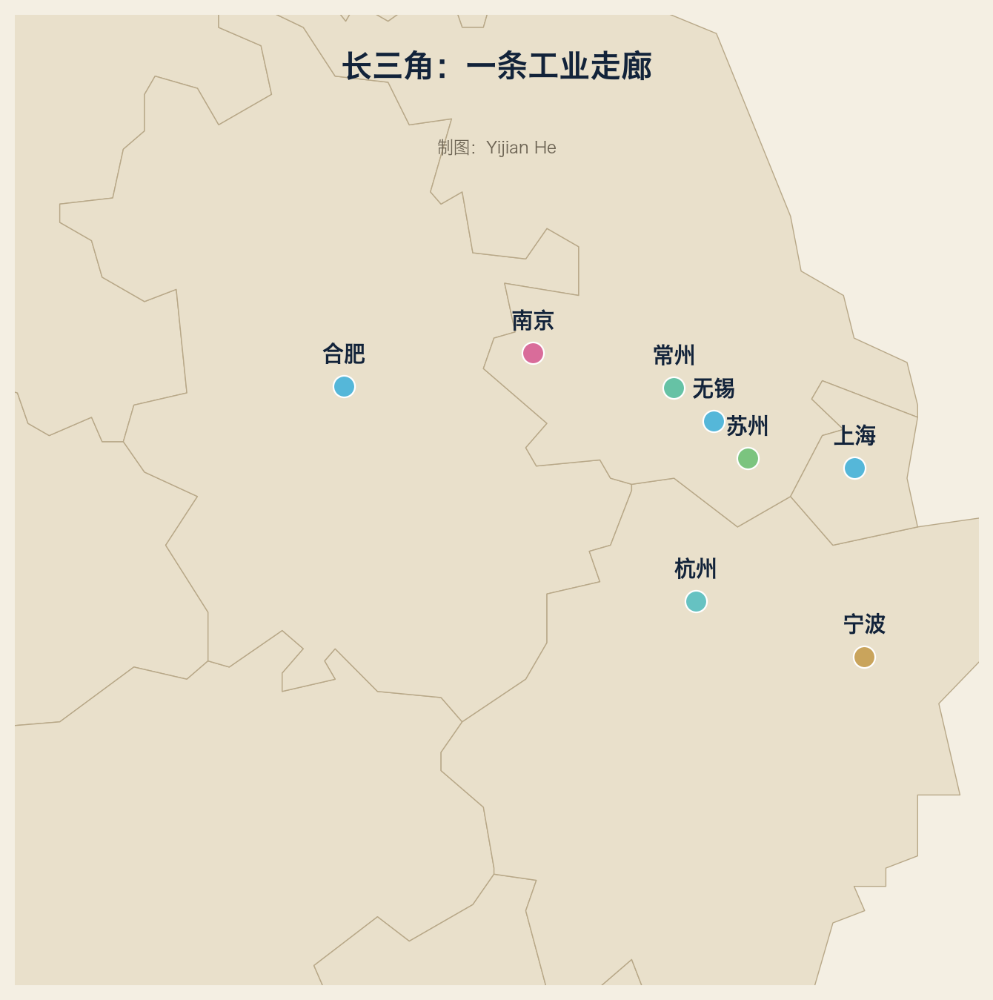

3.1 大区坐标
范围：上海 + 江苏 + 浙江 + 安徽（三省一市）
人口：约 2.37 亿
GDP ：约 33 万亿元（2024，约占全国四分之一）
定位：中国工业的“总部与研发层”+“精密制造层”
长三角是中国唯一同时拥有以下能力的地区：
金融与总部（上海）
高端制造（苏州、无锡、常州）
数字与软件（杭州）
科研与显示（合肥）
模具与汽配（宁波）
机器人（南京）
港口（上海港、宁波舟山港）
3.2 城市模板：上海
| 项目 | 内容 |
|---|---|
| 角色 | 总部、研发、金融、港口、大飞机 |
| 代表企业 | 上汽、特斯拉上海、中芯国际、商飞、宝武、药明康德、拼多多 |
| 产业链 | 汽车 → 半导体 → 生物医药 → 航空 → 金融 |
| 为什么 | 开埠历史 + 港口 + 人才 + 政策 |
| 全球位置 | 上海港 2024 年集装箱吞吐量 5150.6 万标箱，连续 15 年全球第一 |
3.3 城市模板：苏州
| 项目 | 内容 |
|---|---|
| 角色 | 外资制造的“中国总部” |
| 代表企业 | 博世、SEW、西门子、艾默生、苹果链代工、信达生物 |
| 产业链 | 电子 → 汽车零部件 → 生物医药 → 工业自动化 |
| 为什么 | 紧邻上海 + 政府招商 + 土地与成本 |
| 特点 | “苏州模式”：外资来了，本地供应商跟着长出来 |
3.4 城市模板：无锡、常州、南京、杭州
无锡：半导体封测与物联网
代表：长电科技（全球封测前三）、华润微、SK海力士无锡、中科微至
定位：中国半导体封测重镇 + 物联网
常州：新能源与减速器
代表：理想汽车、中创新航、纳博特斯克中国、恒立液压
定位：新能源车制造 + 精密传动
关键词：从“工业明星城市”转型为“新能源之都”
南京：机器人与软件
代表：埃斯顿、南瑞集团、华为南京研究所、软件谷
定位：工业机器人 + 电力自动化 + 软件
杭州：数字与视觉
代表：海康威视（2024 年营收约 925 亿元）、大华、阿里云、吉利
定位：机器视觉 + 云 + 智能汽车
特点：长三角的“软件大脑”
3.5 城市模板：合肥、宁波
合肥：政策之手的样本
2008 京东方：合肥以巨额投资引入显示产业
2016 长鑫存储：DRAM 国产化
2020 蔚来中国：政府基金“抄底”
2024 大众安徽：外资电动车制造
结果：从“县城感省会”变成“风投之城”
宁波：模具与汽配
代表：均胜电子、舜宇光学、海天塑机、宁波银行系
定位：“单项冠军之都”，国家级制造业单项冠军数量全国领先
为什么：港口 + 民营经济 + 模具传统
3.6 长三角如何互相供应
一条新能源车的长三角路径：
上海：芯片设计（地平线/寒武纪上海）与整车总部
常州：电池（中创新航）与整车（理想）
苏州：电驱与零部件（博世/汇川苏州）
杭州：智驾软件（阿里/海康）
合肥：显示与存储（京东方/长鑫）
宁波：车身模具与汽配
上海港/宁波舟山港：出口全球
这就是为什么说长三角“不是八座城市，而是一座超级工厂”。
本章练习
1. 用集群模板给苏州填一张完整的产业集群表
2. 画出“手机从设计到出口”的长三角路径
3. 比较合肥模式与深圳模式的政策差异
词汇笔记（Vokabelnotiz）
| 中文 | Deutsch | English |
|---|---|---|
| 长三角 | Jangtse-Delta | Yangtze River Delta |
| 总部与研发层 | Hauptsitz- und F&E-Ebene | HQ & R&D layer |
| 单项冠军 | Einzel-Champion | Single-product champion |
| 风投之城 | Stadt der Wagniskapitalien | Venture-capital city |